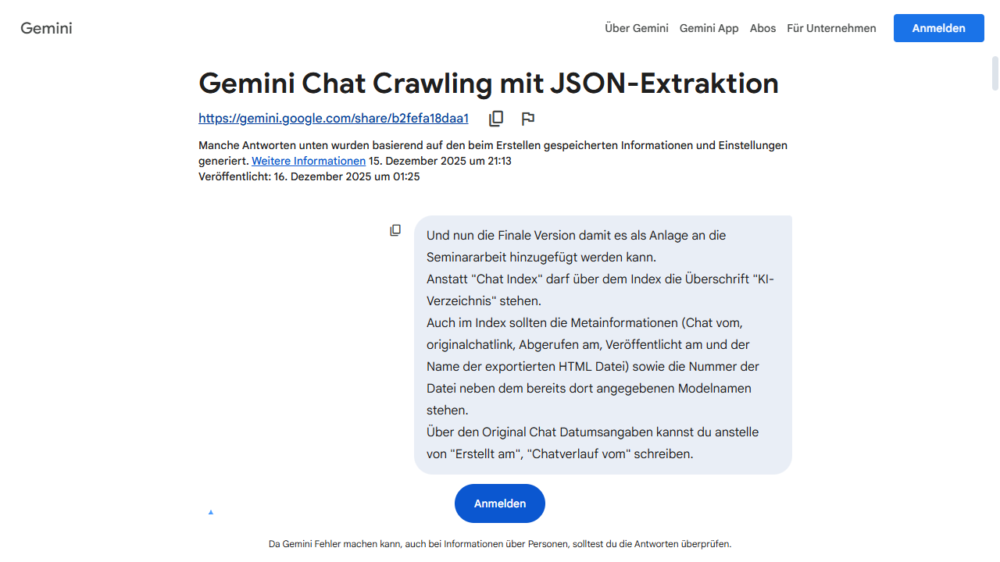
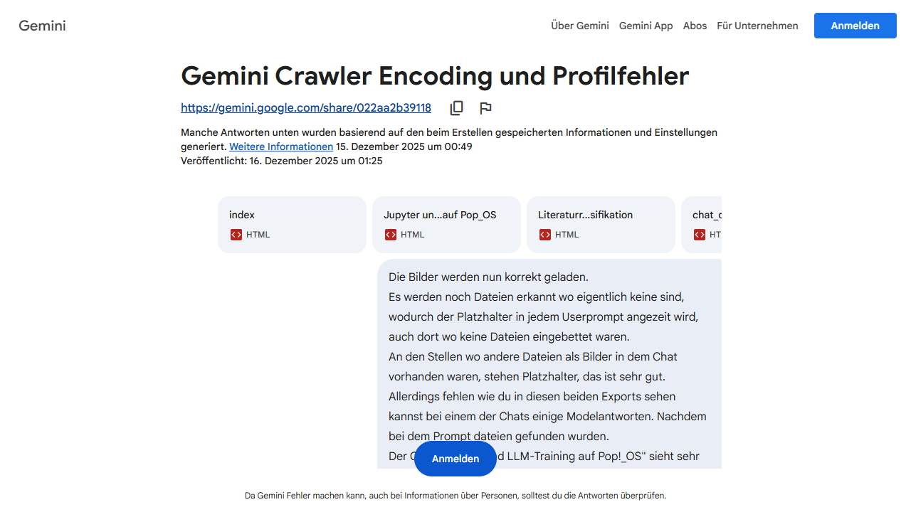
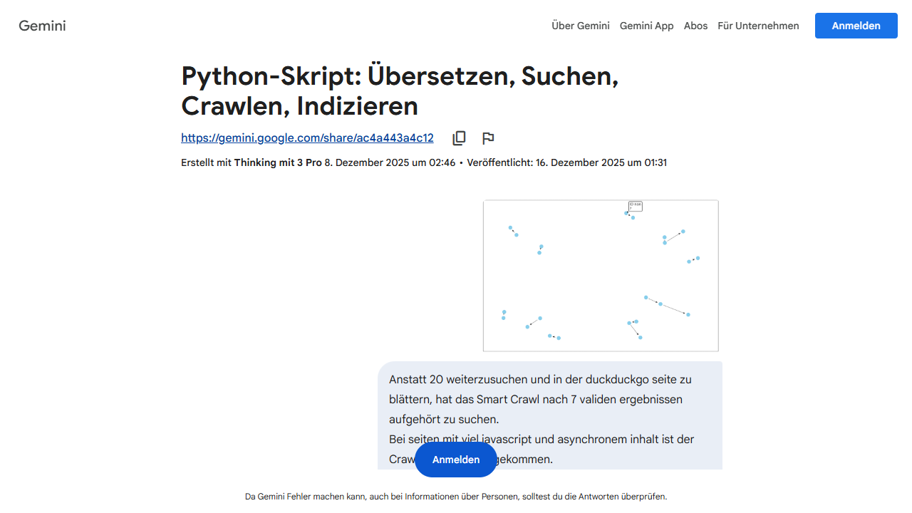

| Nr. | Thema & Quellenverweis | Datumsangaben | Modell & Datei |
|---|---|---|---|
| 1 | Thema: Gemini Chat Crawling mit JSON-Extraktion [Originalchat Link]  |
Chatverlauf vom: 15. Dezember 2025 um 21:13 Veröffentlicht am: 16. Dezember 2025 um 01:25 |
Modell: Gemini Datei: 01_Gemini_Chat_Crawling_mit_JSON_Extraktion.html |
| 2 | Thema: Gemini Crawler Encoding und Profilfehler [Originalchat Link]  |
Chatverlauf vom: 15. Dezember 2025 um 00:49 Veröffentlicht am: 16. Dezember 2025 um 01:25 |
Modell: Gemini Datei: 02_Gemini_Crawler_Encoding_und_Profilfehler.html |
| 3 | Thema: Python-Skript: Übersetzen, Suchen, Crawlen, Indizieren [Originalchat Link]  |
Chatverlauf vom: 8. Dezember 2025 um 02:46 Veröffentlicht am: 16. Dezember 2025 um 01:31 |
Modell: Thinking mit Datei: 03_Python_Skript_Übersetzen_Suchen_Crawlen_Indizieren.html |
| 4 | Thema: Gemini Crawler Encoding und Profilfehler [Originalchat Link] |
Chatverlauf vom: 15. Dezember 2025 um 00:49 Veröffentlicht am: 19. Dezember 2025 um 17:25 |
Modell: Gemini Datei: 04_Gemini_Crawler_Encoding_und_Profilfehler.html |